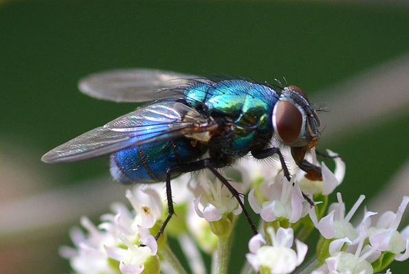

Es una mosca de tamaño mediano, de aproximadamente 8 a 12 mm, caracterizada por su cuerpo de color azul metálico brillante, ojos rojizos y patas oscuras. Los adultos suelen visitar flores para alimentarse de néctar y polen, mientras que sus larvas se desarrollan principalmente en materia animal en descomposición, como cadáveres.